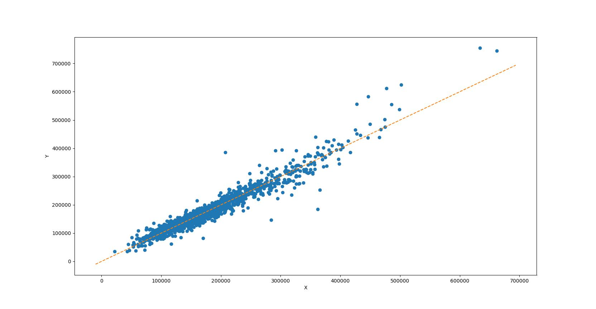
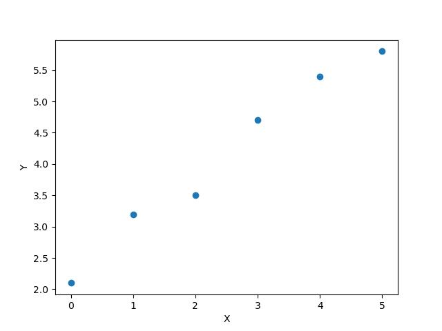

Аппроксимация. Метод наименьших квадратов#
Введение#
Теория#
Аппроксимация – это замена одной функции \(f(x)\) другой, похожей функцией \(Y(x)\). Методы аппроксимации применяют как в случае, когда функция \(f(x)\) задана в табличном виде, так и тогда, когда функция \(f(x)\) является непрерывной и есть необходимость получить упрощенное математическое описание имеющейся сложной зависимости. На практике задача аппроксимации часто возникает тогда, когда по экспериментальным данным требуется подобрать такую аналитическую функцию, которая проходила бы как можно ближе к экспериментальным точкам. Построенная в результате решения задачи аппроксимации кривая сглаживает обрабатываемые экспериментальные данные и показывает общую тенденцию зависимости одного параметра от другого.
Пусть в результате эксперимента получены данные, представленные в следующей таблице:
\(\boldsymbol{x_i}\) |
\(x_0\) |
\(x_1\) |
\(x_2\) |
… |
\(x_m\) |
|---|---|---|---|---|---|
\(\boldsymbol{y_i}\) |
\(y_0\) |
\(y_1\) |
\(y_2\) |
… |
\(y_m\) |
Необходимо заменить таблично заданную функцию аналитической функцией \(Y=f(x,c_0,c_1,...,c_k)\). При этом искомая функция \(f(x,c_0,c_1,...,c_k)\) может зависеть от параметров как линейно, и тогда говорят о линейной аппроксимации, так и нелинейно. При решении задачи надо таким образом подобрать коэффициенты \(c_0,c_1,...,c_k\) функции \(Y\), чтобы отклонения экспериментальных значений \(y_i\) от модельных \(Y_i=f(x_i,c_0,c_1,...,c_k)\) были минимальными.
Этапы аппроксимации#
Решение задачи аппроксимации состоит из нескольких этапов. На первом этапе надо определить вид зависимости, т. е. выбрать такую кривую, которая лучше всего подходит для описания экспериментальных данных. Определить вид кривой можно визуально, представив данные графически, например:
Очевидно, что в общем случае Y зависит от X линейно, поэтому аппроксимацию можно осуществить прямой, заданной функцией \(Y=c_0+c_1x\).
Вторым этапом является вычисление коэффициентов \(c_i\). Всего существует три основных подхода к решению задани аппроксимации (поиску коэффициентов \(c_i\)) а именно: метод наименьших модулей, минимаксный подход и метод наименьших квадратов.
Метод наименьших квадратов#
Этот метод аппроксимации применяется во многих областях науки науки (в математической статистике, физике, биологии и т.д) а так же в обработке изображений. Метод заключается в отыскании такой аппроксимирующей функции, сумма квадратов отклонений \(F\) от которой до экспериментальных (табличных) значений будет наименьшей (\(F \to min\)). Эта функция выглядит следующим образом:
Разберем простой пример: пусть необходимо построить аппроксимирующую прямую для табличной функции:
\(\boldsymbol{x}\) |
0 |
1 |
2 |
3 |
4 |
5 |
|---|---|---|---|---|---|---|
\(\boldsymbol{y}\) |
2.1 |
3.2 |
3.5 |
4.7 |
5.4 |
5.8 |
Точечный график этой функции выглядит так:
В соответствии с этапами необходимо выбрать наиболее подходящую функцию (по условию задачи функция линейная: \(Y=c_0+c_1x\)) и найти коэффициенты \(c_i\). Подставим \(Y\) вместо \(f(x)\) в функции \(F\):
Задача сводится к поиску таких коэффициентов \(c_0\) и \(c_1\) при которых \(F \to min\). Для этого продифференцируем \(F\) по \(c_0\) и \(c_1\) и составим систему уравнений:
Свободные члены перенесем в правую часть:
Вычислим \(x_i^2\), \(x_iy_i\) и дополним ими исходную таблицу:
\(\boldsymbol{x}\) |
0 |
1 |
2 |
3 |
4 |
5 |
|---|---|---|---|---|---|---|
\(\boldsymbol{y}\) |
2.1 |
3.2 |
3.5 |
4.7 |
5.4 |
5.8 |
\(\boldsymbol{x^2}\) |
0 |
1 |
4 |
9 |
16 |
25 |
\(\boldsymbol{xy}\) |
0.0 |
3.2 |
7.0 |
14.1 |
21.6 |
29.0 |
Теперь вычислим все суммы и подсавим их в систему:
Решив систему получим коэффициенты аппроксимирующей прямой \(Y\). Решать систему будем на языке Python при помощи модулей numpy и scipy.linalg.
1import numpy as np
2from scipy.linalg import solve
3
4
5# Исходные данные
6X = np.array([0, 1, 2, 3, 4, 5])
7Y = np.array([2.1, 3.2, 3.5, 4.7, 5.4, 5.8])
8n = 6
9
10# Формируем список из x^2
11X2 = [i**2 for i in X]
12
13# Формируем список из xy
14XY = [x*y for x, y in zip(X, Y)]
15
16# Создаем систему из коэффициентов при неизвестных (в том же порядке что и системе уравнений)
17A = np.array([
18 [sum(X2), sum(X)],
19 [sum(X), n]
20])
21
22# Создаем вектор-строку из свободных членов и превращаем его в вектор-столбец функцией reshape
23B = np.array([
24 sum(XY),
25 sum(Y)
26 ]).reshape([2, 1])# 2 - кол-во столбцов исходного вектора, 1 - кол-во строк исходного вектора
27
28
29# функция solve найдет неизвестные
30result = solve(A, B)
31c0 = result[1][0]
32c1 = result[0][0]
33print(f"c0 = {c0}")
34print(f"c1 = {c1}")
c0 = 2.238095238095238
c1 = 0.7514285714285716
Получили коэффициенты \(c_1\) и \(c_0\) соответственно. Подставим их в уравнение прямой \(Y\):
Задача решена. Изобразим решение графически:
1from matplotlib import pyplot as plt
2
3# Определяем график Y от X
4plt.plot(X, Y, 'o', label="Исходные данные")# параметр 'o' задает точечный график
5
6# Зададим названия осей
7plt.xlabel('X')
8plt.ylabel('Y')
9
10# Определяем аппроксимирующую прямую
11Y_approx = c0 + c1 * X # (см. заметку)
12plt.plot(X, Y_approx, '--', label="Аппроксимирующая прямая")
13
14plt.legend()
15plt.show()
Note
Следует объяснить выражение Y_approx = c0 + c1 * X в девятой строке кода.
Тип объекта X - ndarray массив (похожий на тип списка List) определенный в модуле numpy. На этот массив можно умножать число и прибавлять к нему число. При умножении на число - каждый элемент массива умножается на это число, аналогично и при сложении: каждый элемент массива складывается в числом, например:
lst = np.array([1, 2, 3, 4])
print(lst * 2)
print(lst + 3)
[2 4 6 8]
[4 5 6 7]
При умножении списка List на число происходит его копирование n раз самого в себя, например:
lst = [1, 2, 3]
print(lst * 3)
[1, 2, 3, 1, 2, 3, 1, 2, 3]
Будьте внимательны с типами имеющими схожее назначение.
Задание. Перед вами результаты наблюдений длительности нахождения человека в очереди в зависимости от количества людей в этой очереди.
Номер наблюдения |
Количество человек в очереди, \(X\) |
Время, проведенное в очереди (мин), \(Y\) |
|---|---|---|
1 |
22 |
45 |
2 |
19 |
42 |
3 |
11 |
23 |
4 |
7 |
23 |
5 |
13 |
23 |
6 |
20 |
39 |
7 |
8 |
19 |
8 |
12 |
21 |
9 |
15 |
28 |
10 |
23 |
65 |
Используйте модель линейной регрессии для прогнозирования и вычислите коэффициенты регрессии \(c_1, c_0\).